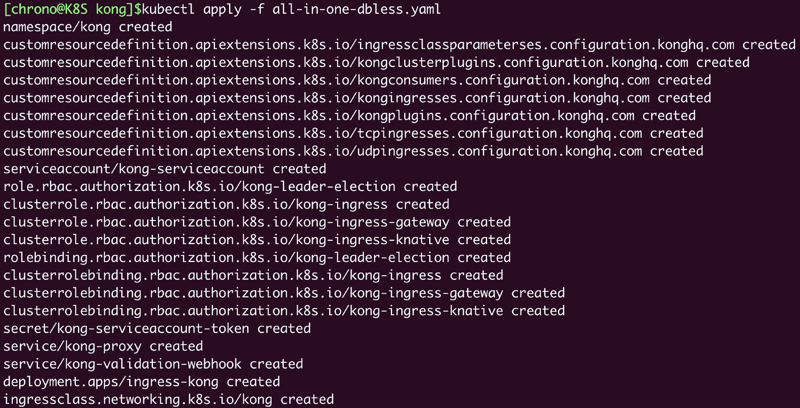

- 00 开篇词 迎难而上，做云原生时代的弄潮儿.md
- 00 课前准备 动手实践才是最好的学习方式.md
- 01 初识容器：万事开头难.md
- 02 被隔离的进程：一起来看看容器的本质.md
- 03 容器化的应用：会了这些你就是Docker高手.md
- 04 创建容器镜像：如何编写正确、高效的Dockerfile.md
- 05 镜像仓库：该怎样用好Docker Hub这个宝藏.md
- 06 打破次元壁：容器该如何与外界互联互通.md
- 07 实战演练：玩转Docker.md
- 08 视频：入门篇实操总结.md
- 09 走近云原生：如何在本机搭建小巧完备的Kubernetes环境.md
- 10 自动化的运维管理：探究Kubernetes工作机制的奥秘.md
- 11 YAML：Kubernetes世界里的通用语.md
- 12 Pod：如何理解这个Kubernetes里最核心的概念？.md
- 13 Job_CronJob：为什么不直接用Pod来处理业务？.md
- 14 ConfigMap_Secret：怎样配置、定制我的应用.md
- 15 实战演练：玩转Kubernetes（1）.md
- 16 视频：初级篇实操总结.md
- 17 更真实的云原生：实际搭建多节点的Kubernetes集群.md
- 18 Deployment：让应用永不宕机.md
- 19 Daemonset：忠实可靠的看门狗.md
- 20 Service：微服务架构的应对之道.md
- 21 Ingress：集群进出流量的总管.md
- 22 实战演练：玩转Kubernetes（2）.md
- 23 视频：中级篇实操总结.md
- 24 PersistentVolume：怎么解决数据持久化的难题？.md
- 25 PersistentVolume + NFS：怎么使用网络共享存储？.md
- 26 StatefulSet：怎么管理有状态的应用？.md
- 27 滚动更新：如何做到平滑的应用升级降级？.md
- 28 应用保障：如何让Pod运行得更健康？.md
- 29 集群管理：如何用名字空间分隔系统资源？.md
- 30 系统监控：如何使用Metrics Server和Prometheus？.md
- 31 网络通信：CNI是怎么回事？又是怎么工作的？.md
- 32 实战演练：玩转Kubernetes（3）.md
- 33 视频：高级篇实操总结.md
- 加餐 docker-compose：单机环境下的容器编排工具.md
- 加餐 谈谈Kong Ingress Controller.md
- 结束语 是终点，更是起点.md
加餐 谈谈Kong Ingress Controller
你好，我是Chrono。
课程已经完结三个多月了，还记得结课时我说的那句话吗：“是终点，更是起点”，课程的完结绝不意味着我们终止对Kubernetes的钻研，相反，不论你我，都会在这个学习的道路上持续地走下去。
当初开课时，我计划了很多内容，不过Kubernetes的领域实在太广，加上我日常工作比较忙，时间和精力有限，所以一些原定的知识点没有来得及展现，比较可惜，我一直想找机会做个补偿。
这几天开发任务略微空闲了些，我就又回到了专栏，准备使用另一个流行的工具：Kong Ingress Controller，再来讲讲对Kubernetes集群管理非常重要的Ingress。
认识Kong Ingress Controller
我们先快速回顾一下Ingress的知识（[第21讲]）。
Ingress类似Service，基于HTTP/HTTPS协议，是七层负载均衡规则的集合，但它自身没有管理能力，必须要借助Ingress Controller才能控制Kubernetes集群的进出口流量。
所以，基于Ingress的定义，就出现了各式各样的Ingress Controller实现。
我们已经见过了Nginx官方开发的Nginx Ingress Controller，但它局限于Nginx自身的能力，Ingress、Service等对象更新时必须要修改静态的配置文件，再重启进程（reload），在变动频繁的微服务系统里就会引发一些问题。
而今天要说的Kong Ingress Controller，则是站在了Nginx这个巨人的肩膀之上，基于OpenResty和内嵌的LuaJIT环境，实现了完全动态的路由变更，消除了reload的成本，运行更加平稳，而且还有很多额外的增强功能，非常适合那些对Kubernetes集群流量有更高、更细致管理需求的用户（图片来源Kong官网）。
安装Kong Ingress Controller
接下来我们就来看看如何在Kubernetes集群里引入Kong Ingress Controller。
简单起见，这次我选择了minikube环境，版本还是1.25.2，对应的Kubernetes也是之前的1.23.3：

目前Kong Ingress Controller的最新版本是2.7.0，你可以从GitHub上(https://github.com/Kong/kubernetes-ingress-controller)直接获取它的源码包：
wget https://github.com/Kong/kubernetes-ingress-controller/archive/refs/tags/v2.7.0.tar.gz
Kong Ingress Controller安装所需的YAML文件，都存放在解压缩后的“deploy”目录里，提供“有数据库”和“无数据库”两种部署方式，这里我选择了最简单的“无数据库”方式，只需要一个 all-in-one-dbless.yaml 就可以完成部署工作，也就是执行这条 kubectl apply 命令：
kubectl apply -f all-in-one-dbless.yaml

我们可以再对比一下两种 Ingress Controller的安装方式。Nginx Ingress Controller是由多个分散的YAML文件组成的，需要顺序执行多次 kubectl apply 命令，有点麻烦；而Kong Ingress Controller则把Namespace、RBAC、Secret、CRD等对象都合并在了一个文件里，安装很方便，同时也不会发生遗忘创建资源的错误。
安装之后，Kong Ingress Controller会创建一个新的名字空间“kong”，里面有一个默认的Ingress Controller，还有对应的Service，你可以用 kubectl get 来查看：

看这里的截图，你可能会注意到，在 kubectl get pod 输出的“READY”列里显示的是“2/2”，意思是这个Pod里有两个容器。
这也是Kong Ingress Controller与Nginx Ingress Controller在实现架构方面的一个明显不同点。
Kong Ingress Controller，在Pod里使用两个容器，分别运行管理进程Controller和代理进程Proxy，两个容器之间使用环回地址（Loopback）通信；而Nginx Ingress Controller则是因为要修改静态的Nginx配置文件，所以管理进程和代理进程必须在一个容器里（图片表示Kong架构设计）。
两种方式并没有优劣之分，但Kong Ingress Controller分离的好处是两个容器彼此独立，可以各自升级维护，对运维更友好一点。
Kong Ingress Controller还创建了两个Service对象，其中的“kong-proxy”是转发流量的服务，注意它被定义成了“LoadBalancer”类型，显然是为了在生产环境里对外暴露服务，不过在我们的实验环境（无论是minikube还是kubeadm）中只能使用NodePort的形式，这里可以看到80端口被映射到了节点的32201。
现在让我们尝试访问一下Kong Ingress Controller，IP就用worker节点的地址，如果你和我一样用的是minikube，则可以用 $(minikube ip) 的形式简单获取：
curl $(minikube ip):32201 -i

从curl获取的响应结果可以看到， Kong Ingress Controller 2.7内部使用的Kong版本是3.0.1，因为现在我们没有为它配置任何Ingress资源，所以返回了状态码404，这是正常的。
我们还可以用 kubectl exec 命令进入Pod，查看它的内部信息：

虽然Kong Ingress Controller里有两个容器，但我们不需要特意用 -c 选项指定容器，它会自动进入默认的Proxy容器（另一个Controller容器里因为不包含Shell，也是无法进入查看的）。
使用Kong Ingress Controller
安装好了，我们看如何使用。和第21讲里的一样，我们仍然不使用默认的Ingress Controller，而是利用Ingress Class自己创建一个新的实例，这样能够更好地理解掌握Kong Ingress Controller的用法。
首先，定义后端应用，还是用Nginx来模拟，做法和[第20讲]里的差不多，用ConfigMap定义配置文件再加载进Nginx Pod里，然后部署Deployment和Service，比较简单，你也比较熟悉，就不列出YAML 代码了，只看一下运行命令后的截图：

显示我创建了两个Nginx Pod，Service对象的名字是ngx-svc。
接下来是定义Ingress Class，名字是“kong-ink”， “spec.controller”字段的值是Kong Ingress Controller的名字“ingress-controllers.konghq.com/kong”，YAML的格式可以参考[第21讲]：
apiVersion: networking.k8s.io/v1
kind: IngressClass
metadata:
name: kong-ink
spec:
controller: ingress-controllers.konghq.com/kong
然后就是定义Ingress对象了，我们还是可以用 kubectl create 来生成YAML 样板文件，用 --rule 指定路由规则，用 --class 指定Ingress Class：
kubectl create ing kong-ing --rule="kong.test/=ngx-svc:80" --class=kong-ink $out
生成的Ingress对象大概就是下面这样，域名是“kong.test”，流量会转发到后端的ngx-svc服务：
apiVersion: networking.k8s.io/v1
kind: Ingress
metadata:
name: kong-ing
spec:
ingressClassName: kong-ink
rules:
- host: kong.test
http:
paths:
- path: /
pathType: Prefix
backend:
service:
name: ngx-svc
port:
number: 80
最后，我们要从 all-in-one-dbless.yaml 这个文件中分离出Ingress Controller的定义。其实也很简单，只要搜索“Deployment”就可以了，然后把它以及相关的Service代码复制一份，另存成“kic.yml”。
当然了，刚复制的代码和默认的Kong Ingress Controller是完全相同的，所以我们必须要参考帮助文档做一些修改，要点我列在了这里：
- Deployment、Service里metadata的 name 都要重命名，比如改成 ingress-kong-dep、ingress-kong-svc。
- spec.selector 和 template.metadata.labels 也要修改成自己的名字，一般来说和Deployment的名字一样，也就是ingress-kong-dep。
- 第一个容器是流量代理Proxy，它里面的镜像可以根据需要，改成任意支持的版本，比如Kong:2.7、Kong:2.8或者Kong:3.1。
- 第二个容器是规则管理Controller，要用环境变量“CONTROLLER_INGRESS_CLASS”指定新的Ingress Class名字
kong-ink，同时用“CONTROLLER_PUBLISH_SERVICE”指定Service的名字ingress-kong-svc。 - Service对象可以把类型改成NodePort，方便后续的测试。
改了这些之后，一个新的Kong Ingress Controller就完成了，大概是这样，修改点我也加注释了你可以对照着看：
apiVersion: apps/v1
kind: Deployment
metadata:
name: ingress-kong-dep # 重命名
namespace: kong
spec:
replicas: 1
selector:
matchLabels:
app: ingress-kong-dep # 重命名
template:
metadata:
labels:
app: ingress-kong-dep # 重命名
spec:
containers:
- env: # 第一个容器， Proxy
...
image: kong:3.1 # 改镜像
- env: # 第二个容器，Controller
- name: CONTROLLER_INGRESS_CLASS
value: kong-ink # 改Ingress Class
- name: CONTROLLER_PUBLISH_SERVICE
value: kong/ingress-kong-svc # 改Service
...
---
apiVersion: v1
kind: Service
metadata:
name: ingress-kong-svc # 重命名
namespace: kong
spec:
...
selector:
app: ingress-kong-dep # 重命名
type: NodePort # 改类型
在我们专栏的配套GitHub项目里，你也可以直接找到改好的YAML 文件。- 把这些都准备好，我们就可以来测试验证Kong Ingress Controller了：
kubectl apply -f ngx-deploy.yml
kubectl apply -f ingress.yml
kubectl apply -f kic.yml

这个截图显示了这些对象的创建结果，其中，新Service对象的NodePort端口是32521。
下面我们就来用curl发送HTTP请求，注意，应该用“--resolve”或者“-H”参数指定Ingress里定义的域名“kong.test”，否则Kong Ingress Controller会找不到路由：
curl $(minikube ip):32521 -H 'host: kong.test' -v

你可以看到，Kong Ingress Controller正确应用了Ingress路由规则，返回了后端Nginx应用的响应数据，而且从响应头“Via”里还可以发现，它现在用的是Kong 3.1。
扩展Kong Ingress Controller
到这里，Kong Ingress Controller的基本用法你就掌握了。
不过，只使用Kubernetes标准的Ingress资源来管理流量，是无法发挥出Kong Ingress Controller的真正实力的，它还有很多非常好用、非常实用的增强功能。
我们在[第27讲]里曾经说过annotation，是Kubernetes为资源对象提供的一个方便扩展功能的手段，所以，使用annotation就可以在不修改Ingress自身定义的前提下，让Kong Ingress Controller更好地利用内部的Kong来管理流量。
目前Kong Ingress Controller支持在Ingress和Service这两个对象上添加annotation，相关的详细文档可以参考官网（https://docs.konghq.com/kubernetes-ingress-controller/2.7.x/references/annotations/），这里我只介绍两个annotation。
第一个是“konghq.com/host-aliases”，它可以为Ingress规则添加额外的域名。
你应该知道吧，Ingress的域名里可以使用通配符 *，比如 *.abc.com，但问题在于 * 只能是前缀，不能是后缀，也就是说我们无法写出 abc.* 这样的域名，这在管理多个域名的时候就显得有点麻烦。
有了“konghq.com/host-aliases”，我们就可以用它来“绕过”这个限制，让Ingress轻松匹配有不同后缀的域名。
比如，我修改一下Ingress定义，在“metadata”里添加一个annotation，让它除了“kong.test”，还能够支持“kong.dev”“kong.ops”等域名，就是这样：
apiVersion: networking.k8s.io/v1
kind: Ingress
metadata:
name: kong-ing
annotations:
konghq.com/host-aliases: "kong.dev, kong.ops" #注意这里
spec:
...
使用 kubectl apply 更新Ingress，再用curl来测试一下：

你就会发现Ingress已经支持了这几个新域名。
第二个是“konghq.com/plugins”，它可以启用Kong Ingress Controller内置的各种插件（Plugins）。
插件，是Kong Ingress Controller的一个特色功能，你可以理解成是“预制工件”，能够附加在流量转发的过程中，实现各种数据处理，并且这个插件机制是开放的，我们既可以使用官方插件，也可以使用第三方插件，还可以使用Lua、Go等语言编写符合自己特定需求的插件。
Kong公司维护了一个经过认证的插件中心（https://docs.konghq.com/hub/），你可以在这里找到涉及认证、安全、流控、分析、日志等多个领域大约100多个插件，今天我们看两个常用的 Response Transformer、Rate Limiting。

Response Transformer插件实现了对响应数据的修改，能够添加、替换、删除响应头或者响应体；Rate Limiting插件就是限速，能够以时分秒等单位任意限制客户端访问的次数。
定义插件需要使用CRD资源，名字是“KongPlugin”，你也可以用kubectl api-resources、kubectl explain 等命令来查看它的apiVersion、kind等信息：
下面我就给出这两个插件对象的示例定义：
apiVersion: configuration.konghq.com/v1
kind: KongPlugin
metadata:
name: kong-add-resp-header-plugin
plugin: response-transformer
config:
add:
headers:
- Resp-New-Header:kong-kic
---
apiVersion: configuration.konghq.com/v1
kind: KongPlugin
metadata:
name: kong-rate-limiting-plugin
plugin: rate-limiting
config:
minute: 2
KongPlugin对象，因为是自定义资源，所以和标准Kubernetes对象不一样，不使用“spec”字段，而是用“plugin”来指定插件名，用“config”来指定插件的配置参数。
比如在这里，我就让Response Transformer插件添加一个新的响应头字段，让Rate Limiting插件限制客户端每分钟只能发两个请求。
定义好这两个插件之后，我们就可以在Ingress对象里用annotations来启用插件功能了：
apiVersion: networking.k8s.io/v1
kind: Ingress
metadata:
name: kong-ing
annotations:
konghq.com/plugins: |
kong-add-resp-header-plugin,
kong-rate-limiting-plugin
现在让我们应用这些插件对象，并且更新Ingress：
kubectl apply -f crd.yml
再发送curl请求：
curl $(minikube ip):32521 -H 'host: kong.test' -i
你就会发现响应头里多出了几个字段，其中的 RateLimit-* 是限速信息，而 Resp-New-Header 就是新加的响应头字段。
把curl连续执行几次，就可以看到限速插件生效了：

Kong Ingress Controller会返回429错误，告诉你访问受限，而且会用“Retry-After”等字段来告诉你多少秒之后才能重新发请求。
小结
好了，今天我们学习了另一种在Kubernetes管理集群进出流量的工具：Kong Ingress Controller，小结一下要点内容：
- Kong Ingress Controller的底层内核仍然是Nginx，但基于OpenResty和LuaJIT，实现了对路由的完全动态管理，不需要reload。
- 使用“无数据库”的方式可以非常简单地安装Kong Ingress Controller，它是一个由两个容器组成的Pod。
- Kong Ingress Controller支持标准的Ingress资源，但还使用了annotation和CRD提供更多的扩展增强功能，特别是插件，可以灵活地加载或者拆卸，实现复杂的流量管理策略。
作为一个CNCF云原生项目，Kong Ingress Controller已经得到了广泛的应用和认可，而且在近年的发展过程中，它也开始支持新的Gateway API，等下次有机会我们再细聊吧。
课下作业
最后是课下作业时间，给你留两个思考题：
- 你能否对比一下Kong Ingress Controller和Nginx Ingress Controller这两个产品，你看重的是它哪方面的表现呢？
- 你觉得插件这种机制有什么好处，能否列举一些其他领域里的类似项目？
好久不见了，期待看到你的想法，我们一起讨论，留言区见。

© 2019 - 2023 Liangliang Lee. Powered by Vert.x and hexo-theme-book.